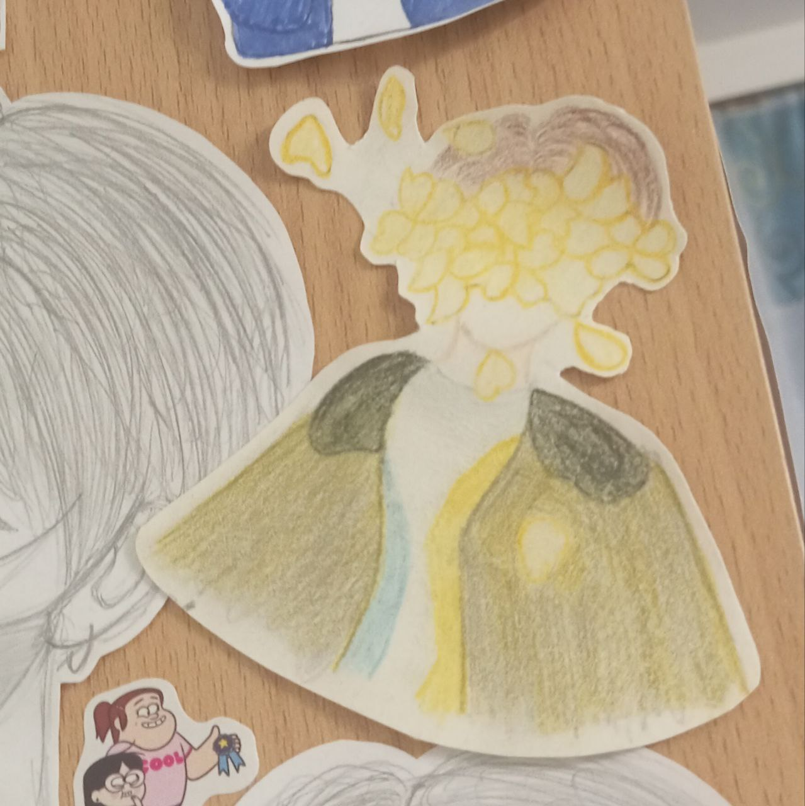
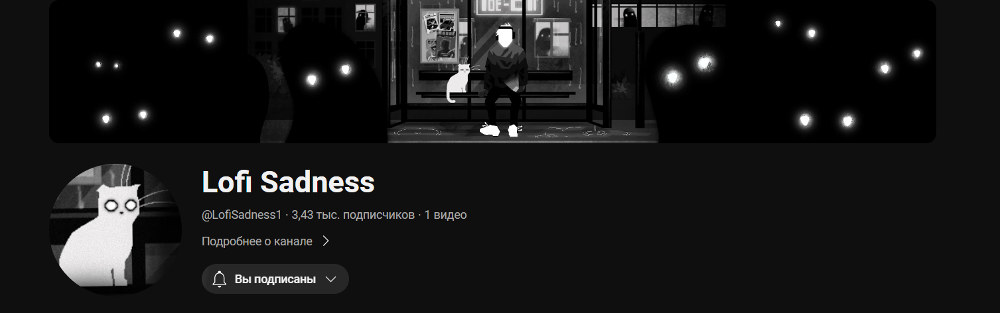
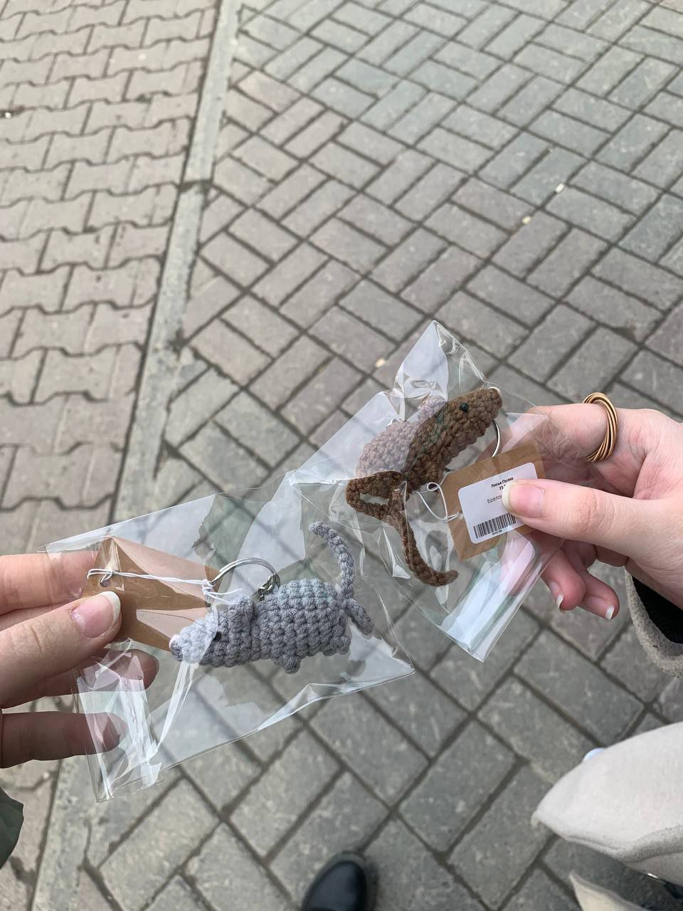
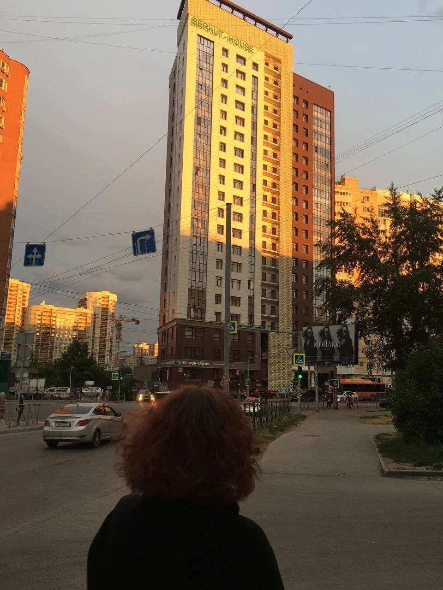
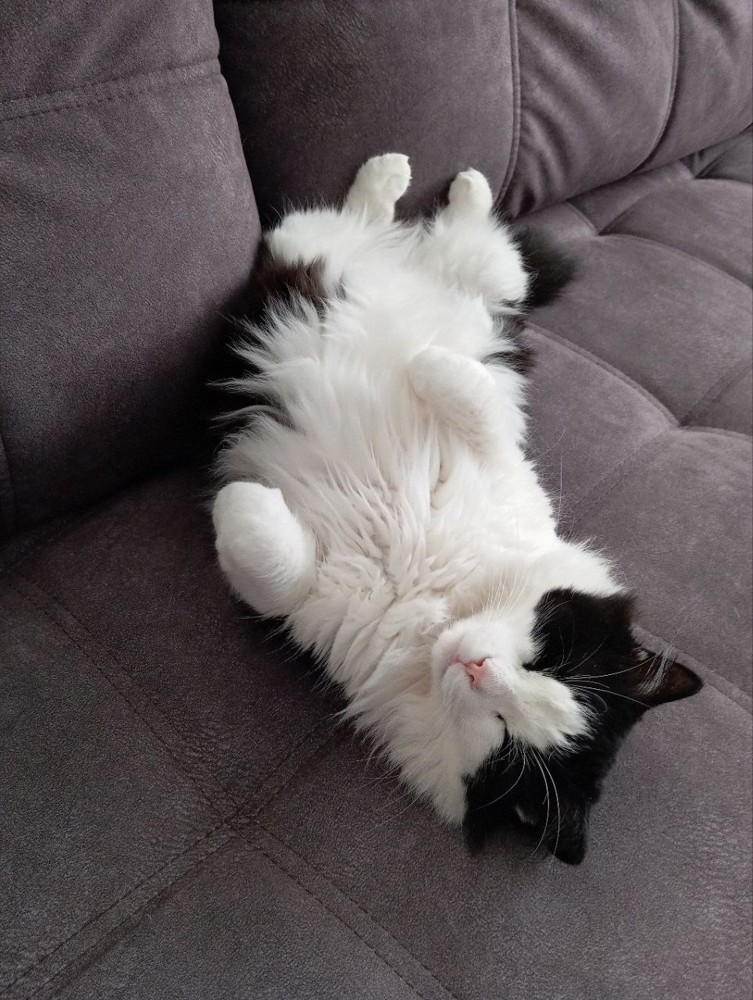
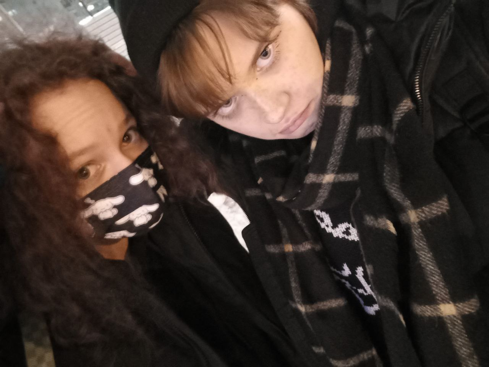

Да, выше я уже писала о некоторых вещах, но сейчас озвучу именно те действия, которые играли более важную роль:
Рисование. Я не художник и рисовать что-то серьёзное мне не дано. Однако, я люблю нарисовать что-то совсем простое: узоры, незамудренные маленькие пейзажи или котяток. Пожалуй, очень хорошо отвлекает от всего, что забивает тебе голову в неподходящие моменты.
 Этот рисуночек висит у меня на шкафу, горжусь им чуточку!
Музыка. Иногда и вправду стоит отвлечься от разговоров и послушать что-то из своего любимого плейлиста или плейлиста, который вам подбирает ваша любимая площадка для прослушивания музыки. Если ничего не подходит, я советую зайти на ютуб и поискать лоу-фай радио (к примеру, канал "Lofi Sadness", спокойная музыка в прямом эфире или же на его записях), либо простые звуки природы.

Спонтанные покупки. Хоть мой денежный бюджет и не резиновый, но я заядлый любитель потратить свои деньги на что-то милое, но ненужное. Считаю, что такое позволять себе постоянно не нужно, но в некоторые моменты можно. К примеру, время от времени я пополняю свою коллекцию значков или брелоков, а также чехлов на телефон. Импульсивные покупки не лучший вариант расслабиться, но порадовать вы себя точно сможете!
 Тут я купила себе и подруге брелок-крыску на последние деньги. Было приятно порадовать себя и её.
Танцы. Когда я нашла себя в танцах, а именно - в каверах на различные корейские группы. Мы с другими ребятами собирали команду, снимали клипы и видео в тик ток. Изматывающее занятие, местами нервное, но всегда было приятно видеть положительные комментарии в процессе съемок или уже после выгрузки кавера в интернет.
 Фотографий с танцев не осталось, только такое фото, где я и подруга шли в магазин за перекусом после шестичасовых съёмок..Просто полежать. В очередной раз хочу напомнить, что мы - люди, а не роботы. Всем рано или поздно понадобиться отдых, поэтому не стесняйтесь себе усраивать моменты релакса. В любой день стоит выбить хотя бы час, чтобы вы могли просто полежать без дела или заняться чем-то, что не является задачей первого плана. Всему всегда найдется время, не откладывайте свою возможность отдохнуть.
 Обычно я лежу с этим чудесным хвостатым. К слову, котики тоже своего рода хороший способ расслабиться.
Ведение личного блога. Писать от руки я не люблю, поэтому не раз заводила личный блог в мессенджерах. Я была всегда там одна, так мне было спокойнее, однако, вы можете пригласить туда своих близких. В этой "группе" я писала все мелочи, которые происходили за день, даже если это какая-то обыденность, но самое важное, о чём стоило бы там писать - ваше эмоциональное состояние за день. Можно делиться радостными и горестными моментами, ведь это ваша личная территория комфорта. К слову, такой блог можно использовать, как архив каких-то фото или видео, чтобы моментами их пересматривать. :)
Сейчас у меня нет настроя вести свой блог, но я активно пользуюсь избранным, чтобы помечать какие-то мелочи.
Некоторые люди из моего окружения. Не могу сказать, что все, кто был со мной рядом, помогли мне в трудные моменты. Поэтому, если у вас складывается такая же ситуация, то не отчаивайтесь. Всегда найдутся те, кто будет вашей настоящей опорой в необходимые моменты. Самое главное, быть искренним с такими людьми и получать то же самое в ответ. Тогда у вас будет отличный тандем, который продержится очень долго! Не бойтесь доверять каким-то людям, ведь кто-то уходит, а кто-то приходит. Просто первое время фильтруйте тот поток информации, который желаете преподнести собеседнику.
 Одно из старых фото с очень важным для меня человеком, который был рядом в нужные моменты.